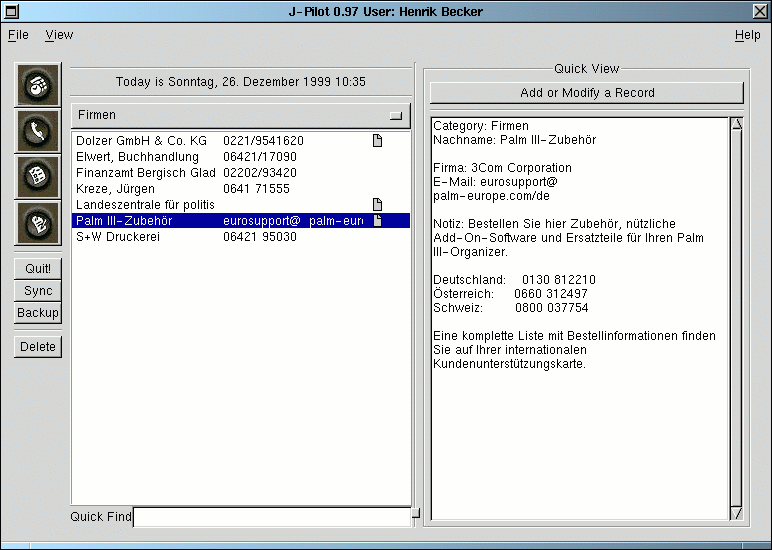

On the left side of the screen there is a list of addresses. These can be viewed by category from the menu above them. They will appear in the same order as on the Palm Pilot. If you want change this, you must change it on the Palm Pilot under the menu in the address program and then sync andswitch to another application and back.
*Hint* You may also browse through the records in a more detailed view. To do this press the "Add or Modify Record" button and then choose the records from the left side of the window.
Just type in the quickfind box the first few letters of the record that you are looking for and thedisplay will incrementally jump to the first matching record.
To delete a record, just highlight the record and hit the delete button on the left side of the screen.
To add a new record, first press the "Add or Modify Record" button on the upper right hand side of the screen. Press "Clear". Then fill in all of the details of the address and then press "Add It". New records will show up in a different color. Once they are synced they will be the same color as existing appointments.
To modify a record, first press the "Add or Modify Record" button on the upper right hand side ofthe screen. Then change the details of the address and then press the "Apply Changes" button.